WindowsにSourceTreeをインストールする手順
Step 1: SourceTreeの公式サイトにアクセス
Atlassianの公式サイトからSourceTreeをダウンロードします。
「Download for Windows」ボタンをクリックしてインストーラーをダウンロードします。
Step 2: インストーラーの実行
ダウンロードしたインストーラー（SourceTreeSetup.exe）を実行します。
インストーラーが起動し、自動的にユーザーフォルダ（C:\Users\ユーザー名\AppData\Local）にインストールが開始されます。
Step 3: Bitbucket設定のスキップ
Bitbucketアカウントの設定画面が表示されます。
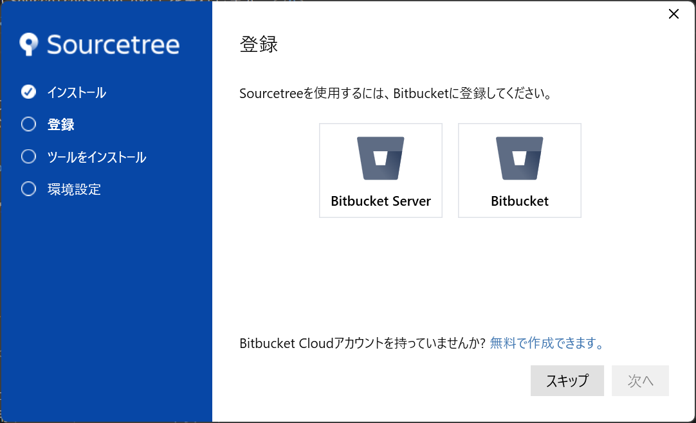
スキップ推奨: Bitbucketは使用しないため、「スキップ」ボタンをクリックして次に進んでください。
Step 4: Mercurial設定
Mercurialバージョン管理システムの設定画面が表示されます。
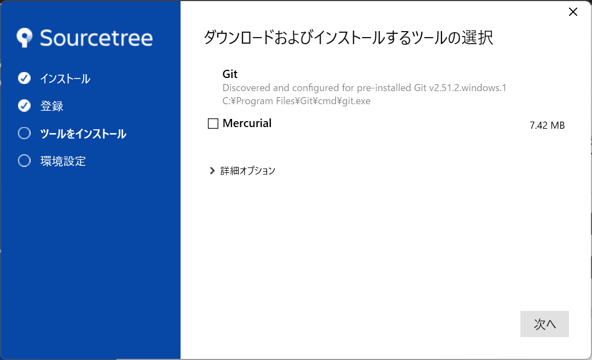
設定内容:
- Mercurialのチェックボックス: 「オフ」にする
- 一般的にはGitのみを使用するため、Mercurialは不要です
推奨: Mercurialは使用しないため、チェックボックスをオフにしてください。
Step 5: バージョン管理システムの設定
SourceTreeで使用するバージョン管理システムを選択する画面が表示されます。
設定内容:
- Git: チェックボックスを「オン」にする
- Mercurial: チェックボックスを「オフ」にする
重要: 一般的にはGitのみを使用するため、Gitのチェックボックスは必ずオンにしてください。
Step 6: ユーザー情報の設定
Gitで使用するユーザー情報を設定します：
- 作者の名前: コミット時に表示される名前
- 作者のメールアドレス: コミット時に記録されるメールアドレス
注意: ここで設定した情報は全てのコミットに記録されるため、正確に入力してください。
Step 7: SSH キーの設定（オプション）
SSHキーを使用してリモートリポジトリに接続する場合の設定です。
- 既存のSSHキーがある場合は「既存のキーを使用」を選択
- 新しくキーを作成する場合は「新しいキーを作成」を選択
- HTTPSを使用する場合はスキップ可能
Step 8: インストール完了
設定が完了すると、SourceTreeのメイン画面が表示されます。
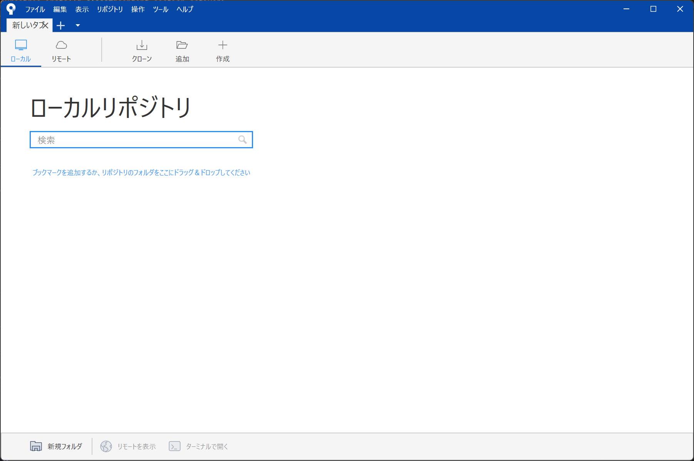
成功! SourceTreeが正常にインストールされました。これでGitリポジトリの管理をグラフィカルに行うことができます。
💡 インストール後の確認事項
- ツール → オプション から各種設定を確認・調整できます
- リポジトリのクローンやローカルリポジトリの作成が可能です
- ブランチの切り替えやマージなどの操作が視覚的に行えます
Git初期設定
Gitを使用する前に、ユーザー情報の設定が必要です。以下の手順ではプライバシーの保護を目的として、GitHubでnoreplyのメールアドレスを取得する方法を説明しますが、これは就職・転職活動で技術をアピールしたり、個人でゲームなどを制作・公開する際の手順です。
重要: 授業で使用するメールアドレスについては、Step4で詳しく説明します。
Step 1: GitHubのプロフィールメニューにアクセス
GitHubにログインし、右上のプロフィール画像をクリックしてメニューを開きます。
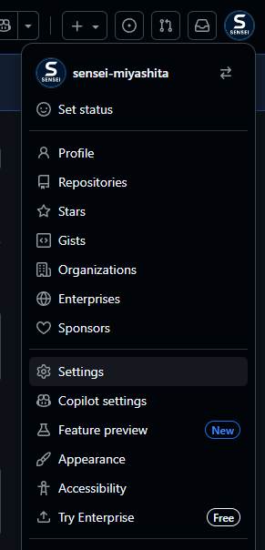
メニューから「Settings」を選択します。
Step 2: Emails設定ページへ移動
設定ページの左側メニューから「Emails」を選択します。
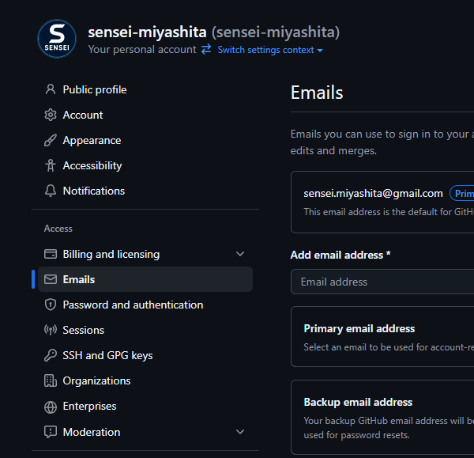
このページでメールアドレスの設定とプライバシー設定を行います。
Step 3: noreplyアドレスの確認
「Keep my email addresses private」のチェックボックスをオンにします。
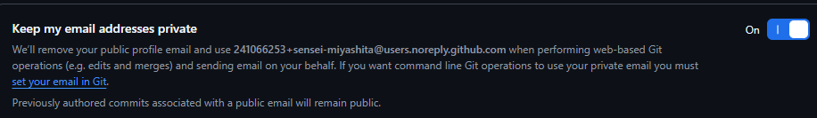
noreplyアドレス: チェックボックスをオンにすると、下部に以下の形式のnoreplyアドレスが表示されます：
123456789+username@users.noreply.github.com
重要: このnoreplyアドレスをコピーして、Gitの設定で使用します。これにより、コミット履歴に実際のメールアドレスが公開されることを防げます。
Step 4: SourceTreeでのユーザー情報設定
⚠️ 学校での授業について: 授業を通してのプログラミング時には、学校から与えられたメールアドレスを使用してください。上記のnoreplyアドレスは、あくまでも個人制作用です。
SourceTreeを開き、メニューバーから「ツール」→「オプション」を選択します。
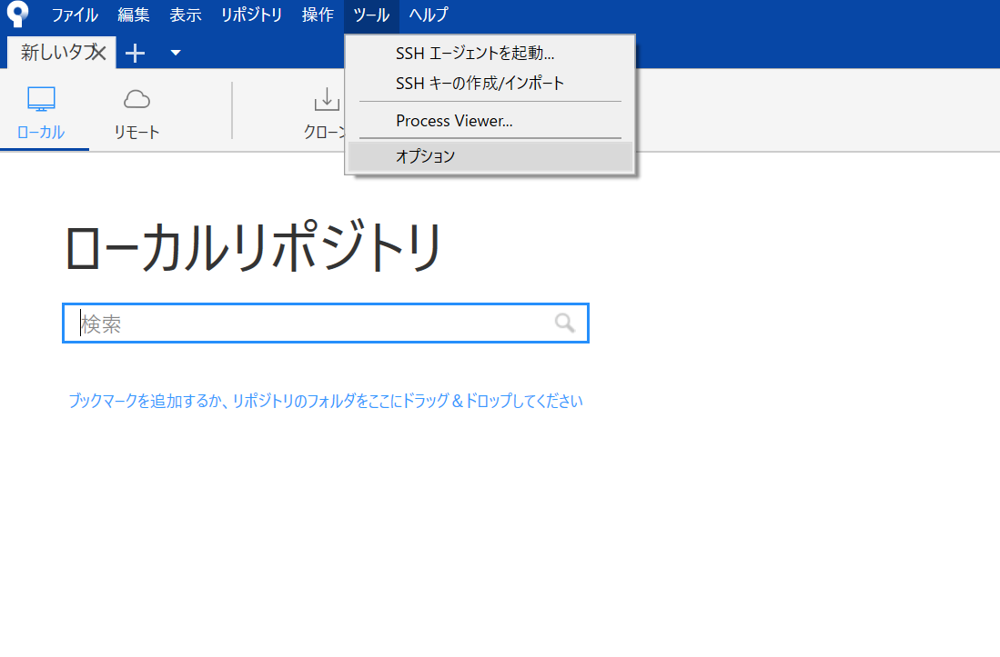
オプション画面が開いたら、「全般」タブでユーザー情報を設定します。
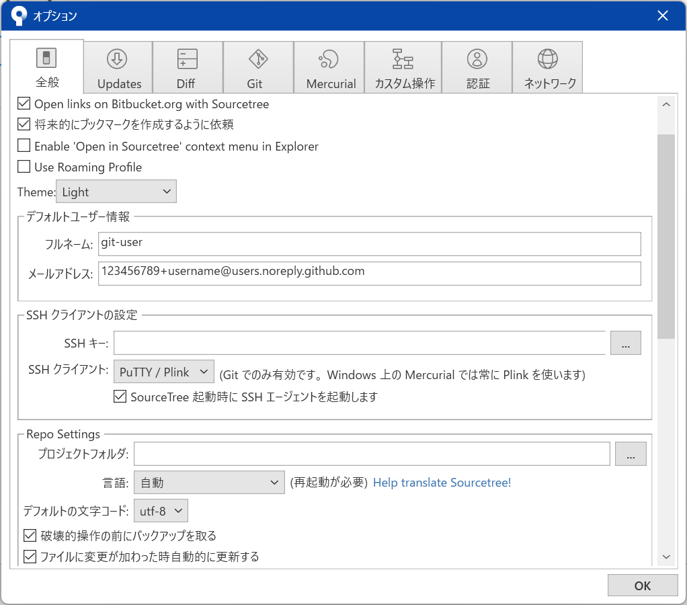
設定内容:
- フルネーム: GitHubのユーザー名または実名
- メールアドレス: 学校から与えられたメールアドレス（個人制作においてはStep 3で取得したnoreplyアドレス）
注意: 既にコミットを行っている場合、過去のコミットのメールアドレスは変更されません。新しい設定は今後のコミットから適用されます。
Step 5: コマンドラインでの設定（参考）
コマンドラインでGitを使用する場合は、以下のコマンドで設定できます：
git config --global user.name "あなたの名前"
git config --global user.email "123456789+username@users.noreply.github.com"設定を確認するには以下のコマンドを使用します：
git config --global user.name
git config --global user.email💡 Git設定のベストプラクティス
- プライバシー保護: noreplyアドレスを使用してメールアドレスを非公開に
- 一貫性: 全てのプロジェクトで同じユーザー情報を使用
- 確認: 設定後は実際にコミットして、正しく表示されるか確認
- チーム開発: チーム内でのコミット履歴の可読性を考慮した名前設定
リポジトリの新規作成
Step 1: GitHubのRepositoriesメニューを開く
GitHubにログインし、右上のプロフィールメニューから「Your repositories」を選択します。
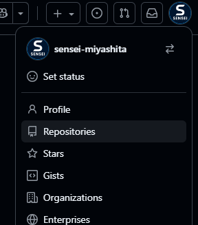
Step 2: Newボタンを押す
「Repositories」ページの右上にある緑色の「New」ボタンをクリックして、新しいリポジトリの作成を開始します。
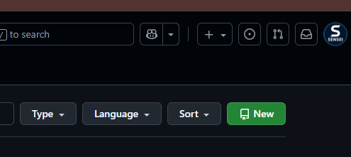
Step 3: リポジトリの設定
新規リポジトリ作成画面で必要な情報を入力します。
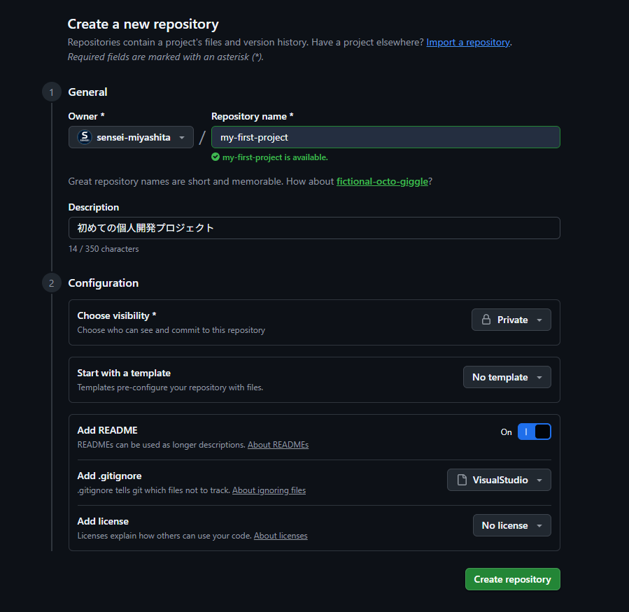
1. General（基本情報）
- Repository name: リポジトリの名前を入力します。プロジェクト名やわかりやすい名前を付けましょう。
- Description (optional): リポジトリの概要説明を入力します。どんなプロジェクトか簡単に説明しておくと、後で見返したときに便利です。
2. Configuration（設定）
⚠️ Visibility（公開設定）:
デフォルトでPublic（公開）になっているため、必ずPrivate（非公開）に変更してください。
- Private: 自分（および招待したユーザー）のみがアクセスできます。授業や個人開発ではPrivateを使用します。
- Public: 誰でも閲覧・利用できる状態です。将来、自分の作品を公開したり、オープンソースプロジェクトを立ち上げる場合などはPublicを選びます。
- Add a README file: ✓ チェックを入れることを推奨します。READMEファイルは、プロジェクトの説明や使い方を記述するファイルです。Markdown（マークダウン）という記法で記述します。Markdownの詳細は多岐にわたるため、ここでは説明を割愛します。
Add .gitignore:
- .gitignore（ドットギットイグノア）テンプレートはVisualStudioを選択してください（当面はこれでOK）。
- 選択欄（.gitignore template）に「Visu」と最初の3〜4文字を入力すると、候補が絞り込まれて「VisualStudio」が選択できます。
- .gitignoreは、Gitで管理しないファイル（ビルド生成物や一時ファイルなど）を指定するための設定ファイルです。VisualStudioを選ぶと、Visual Studio関連の不要なファイルが自動的に除外されます。
Step 4: リポジトリの作成
すべての設定が完了したら、ページ下部の緑色の「Create repository」ボタンをクリックします。
完了! リポジトリが作成されました。これでGitHubにプロジェクト用のリポジトリが用意されました。
💡 重要なポイント
- 必ずPrivateに設定: 授業での課題や個人開発では、リポジトリを外部に公開する必要はありません。
- READMEは推奨: プロジェクトの説明を書く場所として非常に重要です。
- .gitignoreでVisualStudioを選択: 不要なファイルをGitで管理しないようにできます。
- リポジトリ名は慎重に: 後から変更も可能ですが、最初からわかりやすい名前を付けておくと管理が楽になります。
SSHキーの登録
🔐 暗号化通信とSSHについて
GitHubのPrivate（非公開）リポジトリにアクセスするには、SSH（Secure Shell）という暗号化通信の仕組みが必要です。SSHを使うことで、インターネット上で安全にデータをやり取りできます。
この仕組みを使うために、SSHキーをGitHubに登録する必要があります。
SSHの公開鍵と秘密鍵とは？
SSHでは、公開鍵と秘密鍵という2つの鍵を使います。これは次のようにたとえられます：
- 公開鍵： 厳重な鍵がかけられた扉
- 秘密鍵： その扉に出入りするための鍵
公開鍵（扉）はGitHubに登録して公開します。秘密鍵（鍵）は自分のパソコンに保管し、誰にも見せてはいけません。
秘密鍵を持っている人だけが、公開鍵で守られた扉（GitHubのリポジトリ）にアクセスできる仕組みです。
Step 1: SSH鍵ペアの作成
ssh-keygenコマンドを使って、公開鍵と秘密鍵のペアを作成します。
コマンドプロンプトまたはターミナルで実行：
ssh-keygen -t ed25519 -C "your_email@example.com"※ メールアドレス部分は、Git初期設定でSourceTreeに設定したメールアドレスに置き換えてください。
実行中の質問について：
- Enter file in which to save the key: そのままEnterキーを押してください（デフォルトの保存場所が使用されます）。
- Enter passphrase (empty for no passphrase): そのままEnterキーを押してください（パスフレーズなし）。
- Enter same passphrase again: もう一度Enterキーを押してください。
⚠️ パスフレーズについて
今回は簡単に扱うためにパスフレーズの入力を省略していますが、本来はパスフレーズを設定してセキュリティを高めるべきです。パスフレーズを設定する場合は、SSH-Agentという仕組みを使って管理する必要がありますが、説明が長くなるため今回は割愛します。
完了! 公開鍵と秘密鍵が作成されました。
- 公開鍵:
~/.ssh/id_ed25519.pub - 秘密鍵:
~/.ssh/id_ed25519
Step 2: 公開鍵の内容をコピー
作成した公開鍵の内容を表示してコピーします。
Windows（コマンドプロンプト）の場合：
type %USERPROFILE%\.ssh\id_ed25519.pubMac/Linuxの場合：
cat ~/.ssh/id_ed25519.pub表示された内容（ssh-ed25519で始まる長い文字列）を全てコピーしてください。
Step 3: GitHubの設定ページを開く
GitHubにログインし、右上のプロフィールメニューから「Settings」を選択します。
Step 4: SSH and GPG keysページを開く
設定ページの左側メニューから「SSH and GPG keys」を選択します。
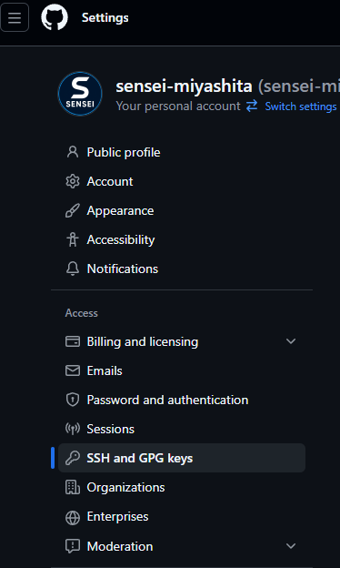
ページ右上にある緑色の「New SSH key」ボタンをクリックして、SSHキー追加画面を開きます。
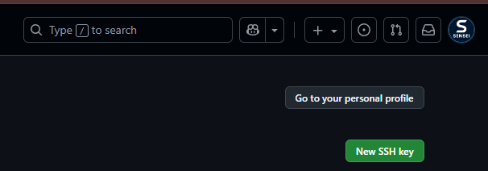
Step 5: SSHキーの登録
SSHキー追加画面で必要な情報を入力します。
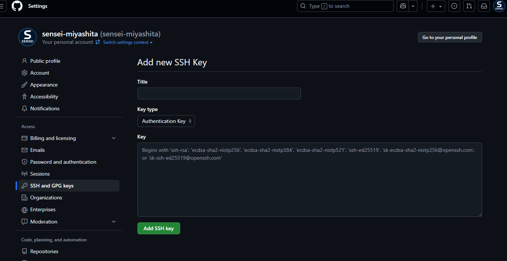
- Title: このSSHキーを識別するための名前を入力します。
- 推奨例: 「School Laptop」「Personal Desktop」「MacBook Pro」など、使用しているパソコンを識別できる名前
- Key type: 「Authentication Key」を選択してください。
- Authentication Key: リポジトリへのアクセス認証に使用（通常はこれを選択）
- Signing Key: コミットの署名に使用（高度な用途）
- Key: Step 2でコピーした公開鍵の内容を貼り付けます。
ssh-ed25519で始まる長い文字列全体を貼り付けてください
すべて入力したら、「Add SSH key」ボタンをクリックします。
完了! SSHキーがGitHubに登録されました。これでPrivateリポジトリに安全にアクセスできるようになります。
Step 6: 接続テスト
正しく設定できたか確認するため、接続テストを必ず行ってください。
コマンドプロンプトまたはターミナルで実行：
ssh -T git@github.com初回接続時は「Are you sure you want to continue connecting?」と聞かれるので、yesと入力してEnterキーを押してください。
成功すると、次のようなメッセージが表示されます：
Hi sensei-miyashita! You've successfully authenticated, but GitHub does not provide shell access.⚠️ 重要: このテストで正常に接続できることを必ず確認してください。エラーが出る場合は、SSHキーの登録やファイルのパスを見直してください。
Step 7: SourceTreeでのSSH設定
SourceTreeでもSSHキーを使えるように設定します。
1. オプション画面を開く
SourceTreeのメニューバーから「ツール」→「オプション」を選択します。
2. 全般タブを開く
オプション画面で「全般」タブを選択します。
3. SSHキーとSSHクライアントを設定
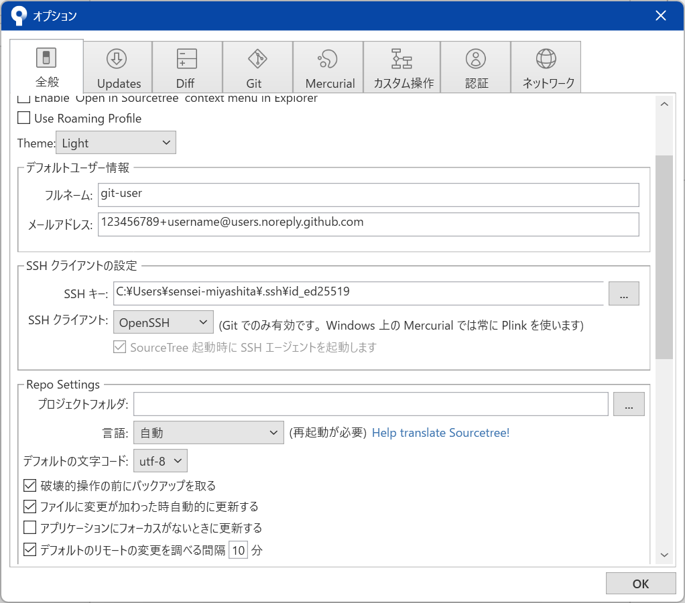
SSHキー: 先ほど作成した秘密鍵を指定します。
秘密鍵はssh-keygenコマンドで作成した際に、一般的に以下のディレクトリに保存されています：
%USERPROFILE%\.ssh\id_ed25519具体的なパス例：
C:\Users\[ユーザー名]\.ssh\id_ed25519※ .sshは隠しディレクトリなので、エクスプローラーで隠しファイル・フォルダーを表示する設定にしておく必要があります。
SSHクライアント: OpenSSHを選択してください。
ドロップダウンメニューから「OpenSSH」を選択します。
設定が完了したら、「OK」ボタンを押して設定を保存します。
Step 8: SourceTreeでの接続テスト
SourceTreeのSSH設定が正しくできているか、接続テストを行います。
1. フェッチボタンを押す
SourceTreeのツールバーにある「フェッチ」ボタンをクリックします。
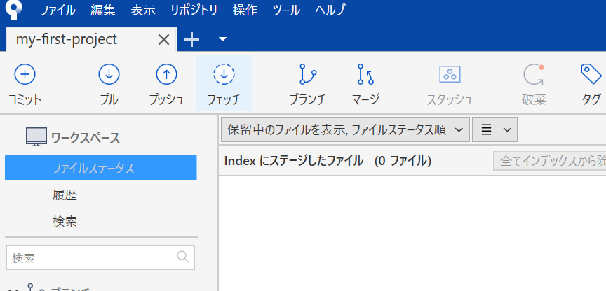
2. フェッチダイアログでOKを押す
フェッチダイアログが開いたら、「OK」ボタンを押します。
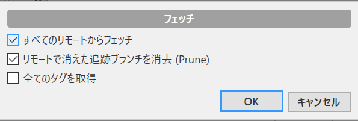
チェックボックスについて:
チェックボックスの設定は任意ですが、現時点では一番上の項目にチェックが入っていれば問題ありません。
3. エラーの有無を確認
成功: エラーが出なければ、SSH設定が正しく完了しています。
⚠️ エラーが出た場合:
- SSHキーのパスが正しく設定されているか確認してください。
- SSHクライアントが「OpenSSH」に設定されているか確認してください。
- Step 6のコマンドプロンプトでの接続テストが成功しているか確認してください。
完了! これでSourceTreeからもSSH接続でGitHubにアクセスできるようになりました。
💡 重要なポイント
- 秘密鍵は絶対に他人に見せない: 秘密鍵（
id_ed25519）は誰にも見せてはいけません。GitHubに登録するのは公開鍵（id_ed25519.pub）のみです。 - 複数のパソコンで使う場合: パソコンごとに別々のSSH鍵ペアを作成して、それぞれGitHubに登録することを推奨します。
- 鍵の管理: パソコンを買い替えたり、使わなくなったパソコンのSSHキーは、GitHubの設定から削除しておきましょう。
- パスフレーズ: より高いセキュリティが必要な場合は、パスフレーズを設定してSSH-Agentで管理することを検討してください。
- SourceTreeの設定: SSH鍵のパスやSSHクライアントの設定を間違えると、GitHubに接続できなくなります。設定内容を正確に入力してください。
リポジトリのクローン
クローン（Clone）とは、GitHubにあるリポジトリを自分のパソコンにコピーして、ローカル環境で作業できるようにすることです。
Step 1: GitHubのリポジトリページを開く
GitHubのトップページから「Repositories」を選択し、表示されたリポジトリ一覧から先ほど作成したリポジトリのページを開きます。
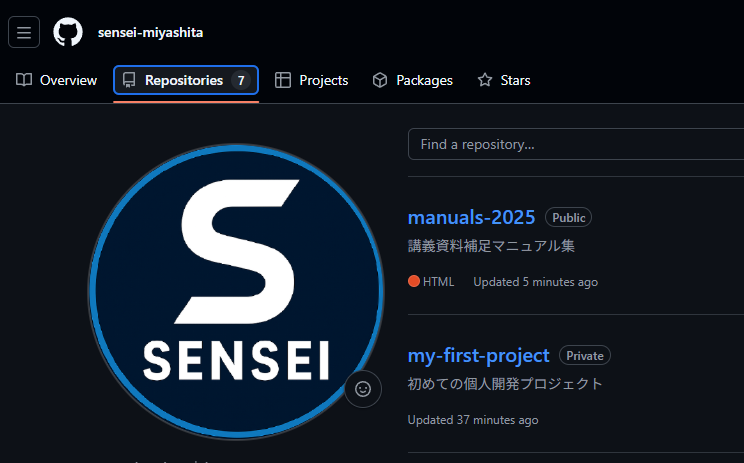
Step 2: クローン用のURLを取得
リポジトリページで緑色の「Code」ボタンをクリックします。
表示されるメニューで「Local」タブを選択し、CloneメニューのHTTPS、SSH、GitHub CLIの中から「SSH」を選択します。
URL表示欄の右側にあるコピーボタン（）をクリックして、URLをコピーします。
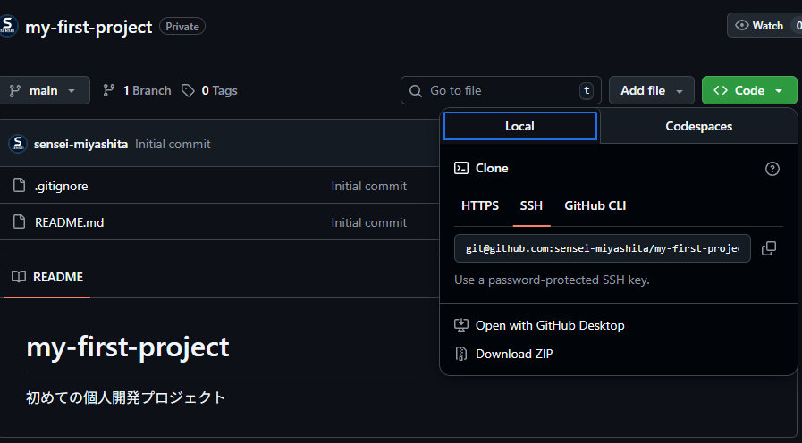
⚠️ 重要: 必ずSSHを選択してください。HTTPSではなくSSHを使うことで、先ほど登録したSSHキーを使った安全な通信が可能になります。
Step 3: ホームディレクトリに移動
コマンドプロンプトを開きます。カレントディレクトリがホームディレクトリでない場合は、cdコマンドでホームディレクトリに移動します。
コマンドプロンプトで実行：
cd %USERPROFILE%Step 4: source\reposディレクトリに移動
Visual Studioがインストールされている環境では、ホームディレクトリにsource\reposというディレクトリがあります。cdコマンドでこのディレクトリに移動します。
コマンドプロンプトで実行：
cd source\repos補足： 必ずしもクローン先はsource\reposでなくても構いませんが、「Program Files」のようなスペースを含むパスは避けるようにしてください。スペースを含むパスは、一部のツールやコマンドで問題を引き起こす可能性があります。
Step 5: git cloneコマンドでリポジトリをクローン
git cloneと入力し、スペースを1つ挟んで先ほどコピーしたURLを貼り付けます。
コマンドプロンプトで実行：
git clone git@github.com:sensei-miyashita/my-first-project.git※ URLは自分のリポジトリのものに置き換えてください。
クローンが完了すると、リポジトリ名のフォルダーが作成され、その中にリポジトリの内容がコピーされます。
Step 6: エクスプローラーで確認
エクスプローラーを開き、%USERPROFILE%\source\repos内にクローンされたリポジトリがフォルダーとして存在していることを確認します。
フォルダー内には、README.mdや.gitignoreなどのファイルが確認できるはずです。
Step 7: SourceTreeにリポジトリを追加
SourceTreeを開き、タブの「+」ボタンを押して新しいタブを開きます。
新しいタブが開いたら、画面上部にある「追加」ボタンを押すと、リポジトリ追加画面が表示されます。
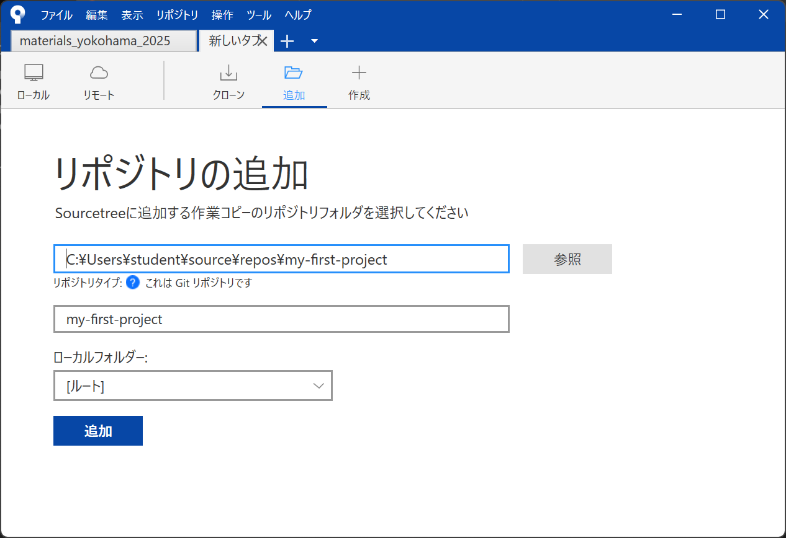
「参照」ボタンを押して、先ほどgit cloneでコピーしてきたディレクトリのフォルダーを指定します。
必要な情報を入力したら、画面下部にある青い「追加」ボタンを押してリポジトリを登録します。
注意: 「追加」ボタンは2種類あります。画面上部の「追加」でリポジトリ追加画面を開き、情報入力後に画面下部の青い「追加」で登録を完了します。
完了! これでSourceTreeからリポジトリの操作ができるようになりました。
💡 参考：世界中のリポジトリを探索しよう
GitHubでは、世界中の様々な開発者が公開しているリポジトリを取得できます。同様の手順で、有名なプロダクトのソースコードをクローンして閲覧することができます。
例1: Visual Studio Code
https://github.com/microsoft/vscode
マイクロソフトが開発している人気のコードエディタ、VS Codeのソースコードを全て閲覧できます。
興味のあるプロダクトを自分で探してソースコードを入手してみよう。
ブランチ管理
ブランチ管理に関する内容をここに記載します。